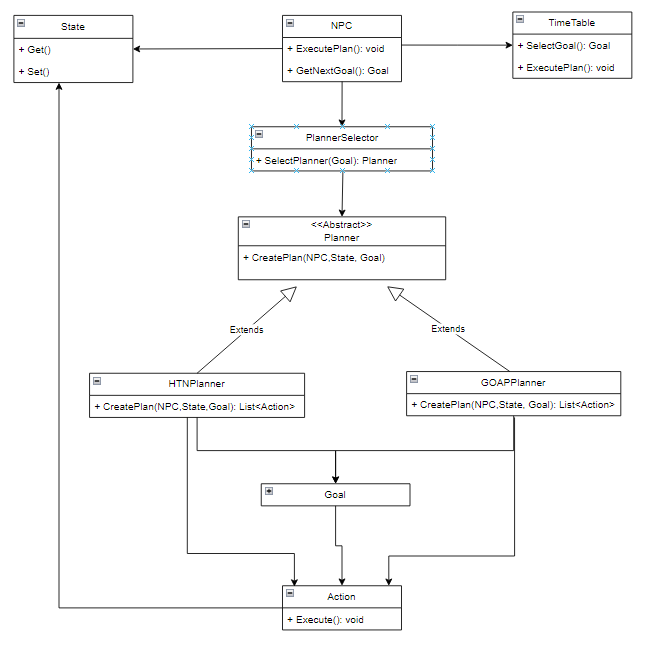
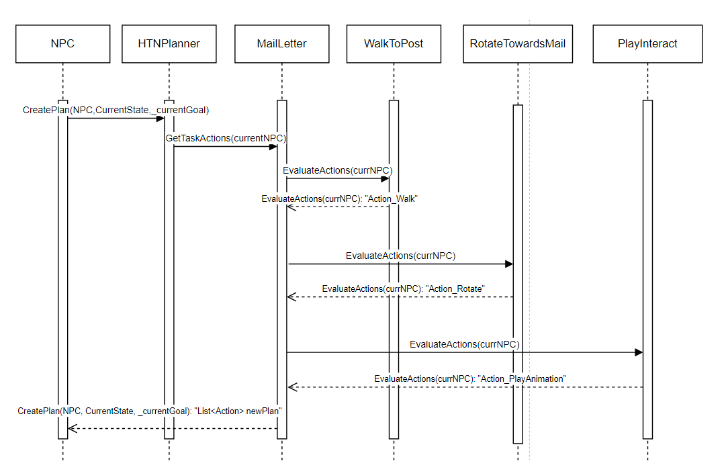
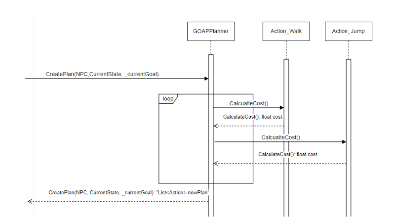

Master's Thesis
Developed @Hochschule Kempten
Project Overview
- Engine: Unity
- Programming Language: C#
- Team Size: 1
- Status: finished
- Grade: 1.0
Description
For my master’s thesis, I developed a system for planning daily routines for NPCs. This system allows developers to quickly create daily schedules via drag-and-drop without having to worry about the actual execution of these plans. Additionally, it is possible to interrupt these schedules for unforeseen events and resume them afterward. An unforeseen event could, for example, be the NPC seeing the player and waving at them. To implement these systems, I relied on two different algorithms. For standard daily planning, I used Hierarchical Task Networks (HTNs). These allow for quickly creating and using a nested sequence of tasks. For example, one can create a main task like “Send a letter,” which consists of subtasks such as “Go to the mailbox,” “Turn to the mailbox,” and “Play animation: drop letter in mailbox.” Once some subtasks are created, a modular system emerges, allowing many different tasks to be represented efficiently.
For handling interruptions, I used Goal-Oriented Action Planning (GOAP). This enables the NPC to dynamically respond to a situation during an interruption and select the best possible action to handle the sudden event. For example, the distance of the NPC to a certain object could determine which action is most appropriate at that moment.
